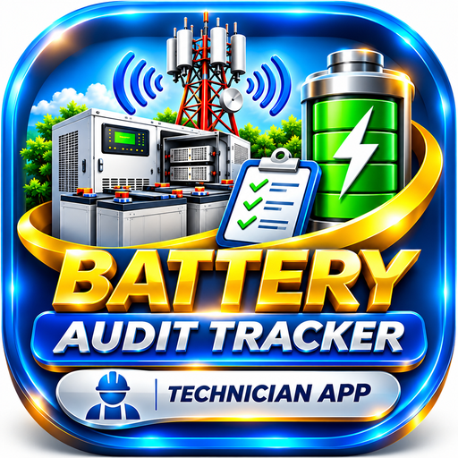

BATTERY AUDIT
TRACKER · TECHNICIAN APPLICATION
Technician Access
Your personal Battery Audit link is ready. Open your assigned Technician App, or add Battery Audit to your mobile Home Screen for quick access.
Android (Chrome):
Tap the browser menu (⋮), then choose Install app or Add to Home screen.
iPhone (Safari): Tap Share, scroll down, choose Add to Home Screen and tap Add.
The installed shortcut will use the name Battery Audit.
iPhone (Safari): Tap Share, scroll down, choose Add to Home Screen and tap Add.
The installed shortcut will use the name Battery Audit.
BATTERY AUDIT TRACKER · TECHNICIAN PORTAL
Design by Nagendra Yadav